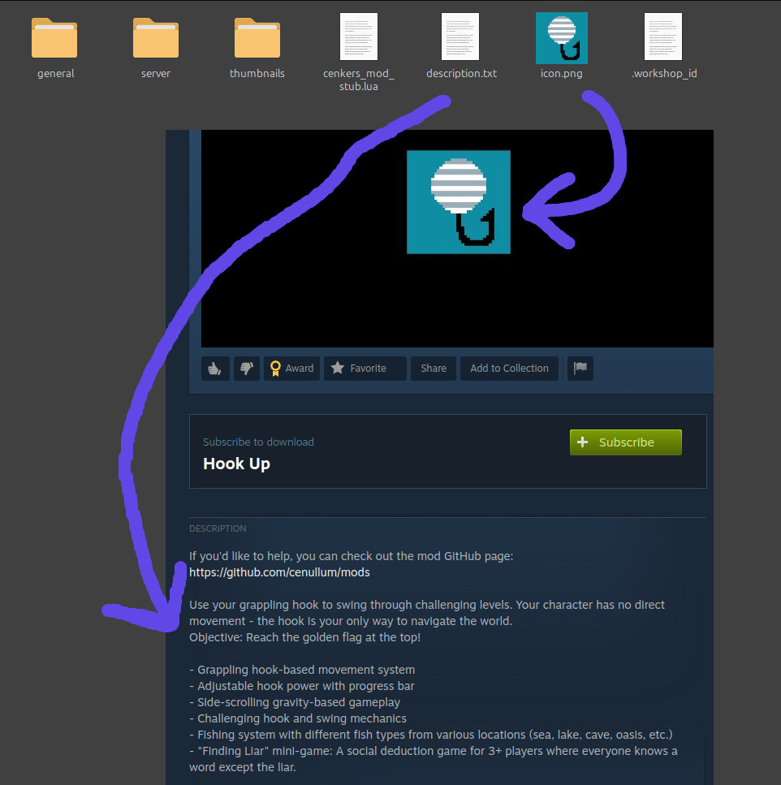
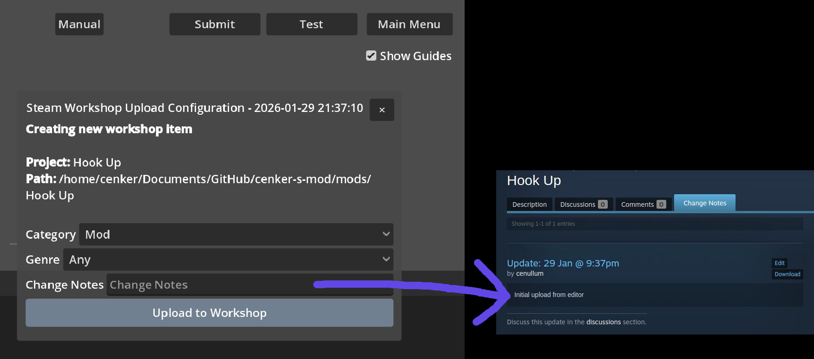
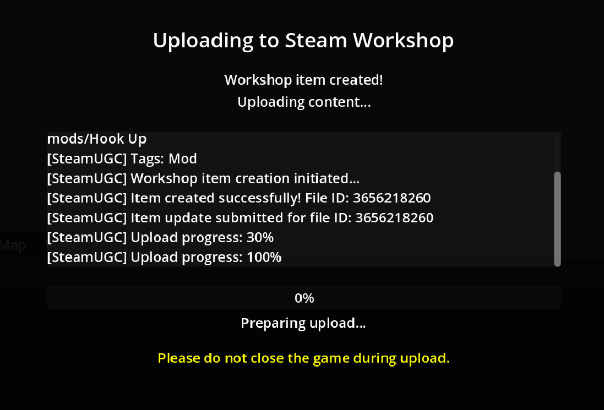
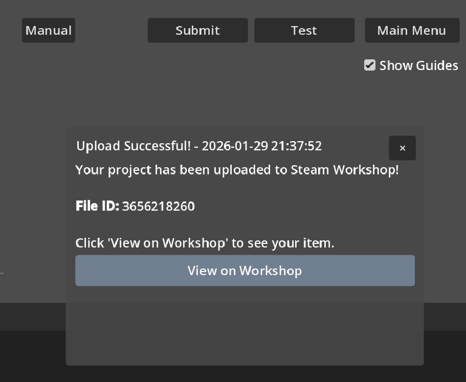

Copyright © 2023-Present Durmuş Cenker Cennet (cenullum)
https://www.cenullum.com
cenker's mod is built with Godot Engine, Lua 5.4, and Weasel Games Godot Lua API.
cenkers_mod_stub.lua (included in
every mod folder) contains detailed API type definitions and documentation comments for all available
functions. You can use this file with external editors that support luaLSP for features
like code suggestions and code completion, as there is currently
no built-in LSP support in cenker's mod.
Table of Contents
- 1. Introduction
- 2. Getting Started
- 3. Game Architecture
- 4. Lua API Reference
- 4.1 Global Variables
- 4.2 Callback Functions
- 4.3 Entity Management
- 4.4 Network Functions
- 4.5 UI System
- 4.6 Audio System
- 4.7 Paintable Canvases
- 4.8 Tilemaps & Maps
- 4.9 Card System
- 4.10 Visual Novel & Stories
- 4.11 Visual Effects (vignette, shadows & hit feedback)
- 4.12 Particles
- 4.13 Localization
- 4.14 Pathfinding (AStar)
- 4.15 Fog of War
- 4.16 Roles & Dedicated Servers
- 4.17 Player Ids: Steam ID & Local User Id
- 4.18 Player Cursors
- 5. Practical Examples
- 6. Best Practices
- 7. Uploading To Steam Workshop
- 8. Dedicated & Master Servers
1. Introduction
Important: cenker's mod is not a game engine. It is a package that has multiple multiplayer mods within it. Users can create and host their own mods using Lua 5.4 scripting. cenker's mod handles networking, physics, rendering, and input management, allowing you to focus on creating unique experiences.
- base - Basic functions (print, type, pairs, ipairs, etc.)
- table - Table manipulation
- string - String operations
- math - Mathematical functions
get_os_time() for time, save_json() for file I/O).
Key Features
- Multiplayer Support: Built-in Steam networking with host-client architecture
- Lua 5.4 Scripting: Write game logic in Lua with full API access
- Entity System: Flexible entity-component architecture
- Network Synchronization: Automatic entity synchronization across clients
- Physics System: 2D physics for collisions and movement (max velocity: 600)
- UI Framework: Dynamic panel and widget creation system
- Audio System: 2D positional audio with effects
- Voice Chat: Integrated voice communication system
Example Mods
The game comes with three example mods that demonstrate different gameplay styles:
- Football: A competitive team-based sports game
- Hook Up: A physics-based platformer with grappling hook mechanics and fishing minigame
- Campfire Survivors: A cooperative survival game with wave-based enemies
2. Getting Started
Mod Structure
Each mod follows this directory structure:
mods/YourModName/
├── general/
│ ├── scripts/ # Lua entity scripts
│ │ ├── user.lua # Player entity (required)
│ │ ├── world.lua # World singleton (recommended)
│ │ └── ... # Your custom entities
│ ├── images/ # PNG textures
│ └── sounds/ # OGG audio files
├── maps/ # Tilemap definitions
└── cenkers_mod_stub.lua # API type definitions (optional)user.lua script is mandatory for player entities. The
world.lua singleton is recommended for managing game state.
Your First Entity
Create a simple entity in general/scripts/my_entity.lua:
-- Set entity properties at the top (MUST be primitive values)
network_mode = 2 -- DYNAMIC: synced continuously
z_index = 5 -- Rendering order (must be between -999 and 999)
-- Called every frame
function _process(delta, inputs)
-- Your game logic here
if IS_LOCAL then
-- Only execute on local player's machine
end
if IS_HOST then
-- Only execute on host machine
end
return inputs
end
-- Initialize entity
set_image({
parent_name = name,
name = "my_sprite",
image_path = "my_texture", -- loads my_texture.png
scale = Vector2(32, 32)
})
set_collision({
parent_name = name,
shape = "circle",
size = 16
})3. Game Architecture
3.1 Entities
Entities are the fundamental building blocks of your game. Each entity is a Lua script that defines behavior and properties. The game automatically creates a RigidBody2D node for each entity.
local are global to that entity only. There is no shared global table
(_G) between entities - each entity's globals are isolated from other entities.
- Maximum velocity for any entity is 600 (linear velocity magnitude is capped)
- Z-index values must be between -999 and 999
Entity Properties
| Property | Type | Description | Default |
|---|---|---|---|
network_mode |
integer | 0=NONE (local), 1=STATIC (sync on join), 2=DYNAMIC (continuous sync) | 0 |
speed |
number | Movement speed multiplier | 15 |
jump_force |
number | Jump impulse force (side-scroller only) | 500 |
max_jump_count |
integer | Total jumps allowed (negative = infinite,0 = disabled, 1 = single, 2 = double ) | 2 |
wall_jump_enabled |
boolean | Enable jumping away from walls | true |
mass |
number | Physics mass | 1 |
gravity_scale |
number | Gravity multiplier (0.0 = no gravity) | 0.0 |
linear_damp |
number | Movement friction | 1.0 |
bounce |
number | Bounciness (0.0-1.0) | 0 |
friction |
number | Surface friction | 1 |
Example: Football Player
-- From Football mod: user.lua
bounce = 0.8
friction = 0.1
lock_rotation = true
add_tag(name, "user")
function _process(delta, inputs)
-- Handle player input
if inputs["key_7"] then
hit_value = math.min(hit_value + 100*delta, 100)
end
return inputs
end3.2 Singletons
Singletons are special entities that exist once per game and manage global state. They are prefixed with
- and short names are recommended for network efficiency.
-- Define as singleton at the top of your script
singleton_name = "-game_manager"
-- Singletons are accessible from any entity
run_function("-game_manager", "start_game", {})-gm, -ui) to
reduce network traffic.
3.3 Network Modes
Network synchronization is controlled by the network_mode variable:
| Mode | Value | Description | Use Case |
|---|---|---|---|
| NONE | 0 | Local only, not synchronized | Client-side UI, visual effects |
| STATIC | 1 | Synchronized only when players join. Movement is NOT synced. | Static world objects, decorations that don't move |
| DYNAMIC | 2 | Continuously synchronized. Position, rotation, and velocity are synced automatically. | Players, projectiles, moving objects |
local).
Network Functions
Network functions use suffixes to control execution:
| Suffix | Who Can Call | Where It Runs without Specific Steam ID | Where It Runs with Specific Steam ID as last parameter |
|---|---|---|---|
_HOST |
Host or client | Host Only | Nothing happens |
_ALL |
Host Only | All Clients (Including Host) | Function will only run on host and the specific user |
_CLIENT |
Host Only | All Clients (Excluding Host) | Function will only run on specific user( specific user can be host itself) |
- Function name MUST end with
_HOST,_ALL, or_CLIENT - First parameter MUST be named
sender_id(or similar; it is a string representing the Steam ID of who wants to run the function) - If
entity_nameis"user", the function will work on each user entity once - Network functions without these suffixes will NOT work
function my_function_HOST(sender_id, other_params)
-- sender_id is the Steam ID of who called this
endNetwork Function Examples
Example 1: Simple Weapon System
-- BAD: Client directly modifies gameplay
function fire_weapon()
if IS_LOCAL then
spawn_entity_local({t = "bullet"}) -- Client can cheat!
end
end
-- GOOD: Client requests, host validates
function fire_weapon()
if IS_LOCAL then
run_network_function(name, "request_fire_weapon_HOST", {})
end
end
function request_fire_weapon_HOST(sender_id)
if sender_id ~= name then return end -- Verify sender
-- Check cooldown using Unix time (seconds)
local current_time = get_os_time() -- Returns Unix timestamp in seconds
if current_time - last_fire_time < 1 then return end -- 1 second cooldown
last_fire_time = current_time
-- Spawn on host
spawn_entity_host({
t = "bullet",
p = get_value("", sender_id, "position"),
owner = sender_id
})
endExample 2: Hook System (from Hook Up Mod)
-- From Hook Up mod: user.lua
-- Client requests to fire hook
function fire_hook_to_mouse()
if IS_LOCAL then
run_network_function(name, "request_fire_hook_HOST", {hook_power})
end
end
-- Host validates and processes the request
function request_fire_hook_HOST(sender_id, requested_power)
if sender_id ~= name then return end -- Validate sender
if hook_state ~= "READY" then return end -- Validate state
-- Clamp power to prevent cheating
local clamped_power = math.max(hook_power_min,
math.min(requested_power, hook_power_max))
-- Calculate and apply velocity
local direction = (mouse_position - position).normalized()
local velocity = direction * clamped_power
unfreeze_entity(hook_entity_name, true)
change_instantly({
entity_name = hook_entity_name,
linear_velocity = velocity,
position = position
})
-- Sync state to all clients
run_network_function(sender_id, "set_hook_state_ALL", {"FIRING"})
end
-- All clients update their hook state
function set_hook_state_ALL(sender_id, new_state)
hook_state = new_state
if new_state == "FIRING" then
run_function(hook_entity_name, "activate_hook", {})
if IS_LOCAL then
set_camera_target(hook_entity_name)
end
end
end4. Lua API Reference
4.1 Global Variables
These variables are automatically available in every entity script:
| Variable | Type | Description |
|---|---|---|
name |
string | Unique entity name (for users, this is their Steam ID) |
script_name |
string | Script filename without .lua extension |
position |
Vector2 | Current world position |
rotation |
number | Current rotation in radians |
linear_velocity |
Vector2 | Current movement velocity |
IS_LOCAL |
boolean | True if this is the local player's entity |
IS_HOST |
boolean | True if running on host machine (on a dedicated server: the server process, which has no player) |
IS_DEDICATED |
boolean | True on a dedicated server and on every player connected to one. See 4.16 |
LOCAL_STEAM_ID |
string | Local player's id, as a string: their Steam ID (17 digits), or their local user id (15 digits) when they joined without Steam. On a dedicated server it has no entity - check entity_exists(LOCAL_STEAM_ID) |
HOST_STEAM_ID |
string | Host's id. On a dedicated server it is the server, never a player - use is_admin(id) for "may do host things" |
MOD_PATH |
string | Absolute path to current mod directory |
position, rotation, linear_velocity, and
angular_velocity, you can read them directly by name without using
get_value(). However, you MUST still use set_value() when modifying them so
the game can detect and process the changes.
-- Reading: Direct access is faster
local pos = position -- Instead of get_value("", name, "position")
local vel = linear_velocity -- Instead of get_value("", name, "linear_velocity")
-- Writing: Must use set_value() for game to detect changes
set_value("", name, "position", Vector2(100, 200))
set_value("", name, "linear_velocity", Vector2(50, 0))4.2 Callback Functions
Define these functions in your entity to receive events:
_process(delta, inputs)
Called every frame. Return modified inputs dictionary or nil.
_process runs every frame and consumes significant
processing power. Avoid calling expensive functions like set_label, set_image,
or set_progress_bar inside _process unless values actually change. Cache
previous values and only update UI when needed.
function _process(delta, inputs)
-- delta: time since last frame in seconds
-- inputs: table with the following keys:
-- key_1 to key_13: boolean (various buttons, see input table below)
-- stick_1: Vector2 -- left stick / WASD (movement)
-- stick_2: Vector2 -- right stick / mouse position in world space
if IS_LOCAL then
-- Check input
if inputs["key_6"] then -- Interact key (E / Square / Y)
-- Perform action
end
-- Movement using stick_1
local movement = inputs["stick_1"]
if movement.x ~= 0 or movement.y ~= 0 then
-- Apply movement
end
end
return inputs -- or nil to leave unchanged
endInput System and Gamepad Support
The game comes with full gamepad integration and virtual mouse support. Players can use keyboard/mouse, Nintendo Switch controllers, Xbox controllers, or PlayStation controllers. The input mappings are automatically handled by the game.
key_1 through key_13, stick_1, stick_2) and the
game handles the rest. For detailed gamepad mappings, refer to gamepad.ods in the docs
folder.
| Input Name | Default PC Key | Xbox | PlayStation | Nintendo Switch | Suggested Use |
|---|---|---|---|---|---|
key_1 |
1 | D-Pad Right | D-Pad Right | D-Pad Right | Item selection |
key_2 |
2 | D-Pad Left | D-Pad Left | D-Pad Left | Item selection |
key_3 |
3 | D-Pad Down | D-Pad Down | D-Pad Down | Item selection |
key_4 |
Q | D-Pad Up | D-Pad Up | D-Pad Up | Switch previous item |
key_5 |
R | Y | Triangle | X | Reload |
key_6 |
E | X | Square | Y | Interact |
key_7 |
F | B | Circle | A | Dash |
key_8 |
SPACE | A | X | B | Jump |
key_9 |
RIGHT MOUSE | LB | L1 | L | Secondary fire/action |
key_10 |
SHIFT | LT | L2 | ZL | Sprint |
key_11 |
G | L3 (Left Stick Click) | L3 (Left Stick Click) | L3 (Left Stick Click) | Drop |
key_12 |
LEFT MOUSE | RB | R1 | R | Primary fire/action |
key_13 |
CTRL | RT | R2 | ZR | Crouch |
stick_1 |
WASD | Left Stick | Left Stick | Left Stick | Movement controls |
stick_2 |
Mouse Position | Right Stick | Right Stick | Right Stick | Mouse position in world space |
Virtual Gamepad (touch screens)
On phones and tablets the game shows an on-screen gamepad while you play (players can switch it on
for a PC too, under Settings → Virtual Gamepad, and drag every button where they like). It does
not add new inputs: each on-screen control is one of the inputs in the table above, and it reaches
your _process(delta, inputs) exactly like a key press would.
- Only registered inputs get a button. The pad shows the inputs your
world.luaregistered withset_input_display_name, and that label is the button's caption. An input you read but never registered is not sent at all (on any device), so it has no button either. Keep labels short; they are shrunk to fit a round button. stick_1is the left on-screen stick.stick_2stays a world position: the right on-screen stick moves an aim point, and touching the screen outside the buttons puts the aim point there.- A touch outside the buttons also counts as the left mouse button, so with the default bindings
it holds
key_12. Touches on the buttons never do. - The menu button (and Android's back button) opens the in-game menu, like ESC.
_on_user_initialized(steam_id, nickname)
Called when a user finishes joining and is ready to receive network calls.
function _on_user_initialized(steam_id, nickname)
if IS_HOST then
if steam_id == name then
-- This user just finished initializing
local player_color = generate_random_color()
run_network_function(name, "create_user_ALL", {player_color})
else
-- Send existing data to new player
run_network_function(name, "sync_state_CLIENT", {current_state}, steam_id)
end
end
end_on_user_disconnected(steam_id, nickname)
Called when a user leaves the game.
function _on_user_disconnected(steam_id, nickname)
if steam_id == name then
-- Clean up this user's entities
destroy("", hook_entity_name)
destroy_line(hook_line_name)
end
endadd_command(entity_name, function_name, command_name, description, chat_executable)
Registers a command to the centralized command system. Commands are reset when the map is unloaded.
Note: Do not include the / prefix in the command_name; it is added
automatically for chat.
entity_name: The name of the singleton or entity (e.g.,"-cmd").function_name: The function inside that entity to execute.command_name: The name of the command without prefix (e.g.,"rules").description: A brief description (shown in/help). If your command has parameters, describe them here (e.g."Teleport to [x] [y]").chat_executable: Boolean. If true, it can be executed via chat with a/prefix.
add_command cannot execute network functions directly via
run_network_function. If you need to trigger network logic from a command, you must use a
local intermediate (wrapper) function as the callback, which then calls
run_network_function.
-- Typical usage (at top of script)
add_command("-cmd", "show_rules", "rules", "Shows Finding Liar game rules", true)
-- Users can now type '/rules' in chat or 'rules' in the console.
-- Callback function example:
function show_rules(sender_id, arg1, arg2)
-- arg1, arg2 etc. are strings passed from the chat/console
add_to_chat("Rules: Be nice!", false)
end_on_chat_message_received(sender_id, nickname, message)
Called when a chat message is received. Supports chaining between multiple mods.
add_command) before calling this function.
If a message matches a registered command, this handler will not be triggered for that message.
message argument is already formatted with the
player's nickname and color (e.g., [color=#66FF99]username[/color]: actual message).
- Return
nil: Mod performs no action. Passes the current message to the next mod. - Return
"": Mod suppresses the message. The chain stops, and nothing is displayed. - Return string: Mod modifies the message. The new string is passed to the next mod.
function _on_chat_message_received(sender_id, nickname, message)
-- Example 1: Suppress messages from a specific user
if sender_id == "76561198..." then
return ""
end
-- Example 2: Profanity Filter (Censorship)
-- Replaces "your mom" with "***" (case-insensitive)
local censored_message = message:gsub("[Yy][Oo][Uu][Rr] [Mm][Oo][Mm]", "***")
-- Example 3: Emoji Replacement
-- Replaces ":)" with a smiling face symbol
local final_message = censored_message:gsub(":%s?%)", "😊")
-- Example 4: Add a custom prefix
return "[GLOBAL] " .. final_message
end_on_gamepad_connection_changed(has_gamepad)
Called when gamepad is connected/disconnected or display style changes.
function _on_gamepad_connection_changed(has_gamepad)
if IS_LOCAL then
-- Refresh button prompts
set_label({
name = "tutorial_label",
text = "Press @key_7@ to interact\n@stick_1@ to move"
})
end
end_on_navigation_finished(reached)
Called on an entity moved with navigate_to when it stops on its own:
true when it reached the target, false when there is no path or it got
stuck. Not called when you stop it yourself. See 4.14 Pathfinding.
4.3 Entity Management
spawn_entity_local(config)
Spawn an entity locally (client-side only, not synced).
-- Spawn a local particle effect
local particle = spawn_entity_local({
t = "particle_effect", -- script name
p = Vector2(100, 100), -- position
r = 0, -- rotation in radians
v = Vector2(0, 0), -- linear velocity
a = 0, -- angular velocity
-- Custom properties:
duration = 2.0,
color = Color(1, 0, 0, 1)
})spawn_entity_host(config)
Spawn a network-synchronized entity (Host only).
-- From Campfire Survivors: spawn monsters
if IS_HOST then
local monster = spawn_entity_host({
t = "monster",
p = spawn_position,
hp = 100,
damage = 10,
speed = 20
})
enddestroy(parent_name, entity_name, notify_network)
Destroy an entity and its children.
-- Destroy a networked entity
if IS_HOST then
destroy("", bullet_name, true) -- Notify clients
end
-- Destroy a local entity
destroy("", effect_name, false)entity_exists(entity_name, parent_name)
Ask whether an entity - or one of its children, such as an image or a label - is still
in the world, without logging an error when it is not. Every other
lookup (get_value, set_image, set_shader...)
prints an error for a missing entity, which is what you want for a typo but not for
something that legitimately outlives its target: a timer, or a hit flash still playing
on the monster the killing blow just destroyed. Without this guard those few frames
fill the log with identical errors.
if entity_exists(monster_name) then
run_function(monster_name, "take_damage", { 10 })
end
-- Checking a child: pass the parent as the second argument.
if entity_exists("body", monster_name) then
set_shader({ parent_name = monster_name, image_name = "body", shader_name = "" })
endfreeze_entity(entity_name, all)
Freeze an entity's physics (stops movement).
-- From Hook Up: freeze hook when attached
freeze_entity(hook_entity_name, true) -- Sync to all clients4.4 Network Functions
run_network_function(entity_name, function_name, parameters, steam_id)
Execute a function across the network.
-- Host broadcasts to all clients
if IS_HOST then
run_network_function("user_steam_id", "update_score_ALL", {new_score})
end
-- Client sends request to host
if IS_LOCAL then
run_network_function(name, "request_action_HOST", {action_data})
end
-- Host sends to specific client
if IS_HOST then
run_network_function(name, "show_message_CLIENT",
{"Welcome!"}, target_steam_id)
endImportant: User Entity Names Are Steam IDs
In user scripts (user.lua), the name variable contains the player's Steam ID. This is why
callbacks like _on_user_initialized, _on_user_disconnected, and
_on_user_banned often check if steam_id == name - these callbacks run on ALL
user entities, so you need to verify which user the event belongs to.
-- These callbacks run on EVERY user entity
function _on_user_disconnected(steam_id, nickname)
if steam_id == name then -- Check if THIS user disconnected
-- Clean up this user's entities
destroy("", hook_entity_name)
stop_timer("shoot_timer"..name)
end
end
function _on_user_initialized(steam_id, nickname)
if steam_id == name then -- Check if THIS user just joined
-- Initialize this user
run_network_function(name, "setup_player_ALL", {})
end
endTargeting User Entities: When calling network functions on user entities, use the player's Steam ID as the entity name:
-- target_steam_id is a specific player's Steam ID
run_network_function(target_steam_id, "change_team_ALL", {team_id})
-- In the user.lua script, 'name' equals the Steam ID
run_network_function(name, "update_health_ALL", {new_health})4.5 UI System
create_panel(config)
Create a custom UI window/panel.
-- From Hook Up: inventory panel
local panel_name = create_panel({
name = "_inventory_panel",
title = "Inventory",
text = "Your items:",
resizable = true,
close = true,
minimum_size = Vector2(400, 300),
is_scrollable = true,
color = Color(0.2, 0.2, 0.2, 0.9)
})add_button_to_panel(panel_name, config)
Add an interactive button to a panel.
add_button_to_panel("_upgrade_panel", {
entity_name = name,
function_name = "select_upgrade",
text = "Increase Speed (+20%)",
extra_args = {upgrade_type = "speed", value = 0.2},
color = Color(0.3, 0.5, 0.7)
})set_label(config)
Create or update a text label.
-- From Campfire Survivors: health display
if IS_LOCAL then
set_label({
name = "_health_label",
text = string.format("Health: %d/%d", current_health, max_health),
position = Vector2(20, 20),
size = Vector2(200, 20),
font_size = 16,
font_color = Color(1, 1, 1, 1),
outline_size = 2,
outline_color = Color(0, 0, 0, 1)
})
endCrisp world-space text (font_size + scale)
Small font sizes render blurry on world-space labels (name tags, damage numbers).
Instead, pick a big font_size and shrink the label with the
scale config (a float scales uniformly, or pass a Vector2).
Set it once — there is no per-frame cost. Note that position and
size are pre-scale: a 384×72 label at scale 0.25 covers 96×18 world
pixels. The same Scale setting is available in the editor's property panel for
world-space labels and is saved with the map.
-- Looks like font size 12, but razor sharp:
set_label({
parent_name = name, name = "nick", text = nickname,
font_size = 48, scale = 0.25,
size = Vector2(512, 96), position = Vector2(-64, -24),
horizontal_alignment = 1, outline_size = 16
})Rotation
Every placed element — images, labels, buttons, progress bars, polygons and script
entities — accepts a rotation config key in radians.
The same value is editable in the editor's property panel as a Rotation field in
degrees, works in both the Map tab (world space) and the View tab (HUD),
is saved with the map/view (JSON key r) and is covered by undo/redo
(Ctrl+Z / Ctrl+Y).
Images, labels, buttons and progress bars rotate around their own centre; polygons and script entities rotate around their origin (the point you see as their position). Rotation set from Lua is local-only and is never synced by itself — call it on every peer, or let DYNAMIC entities sync their own rotation.
-- A label tilted 15 degrees
set_label({ name = "_title", text = "SALE!", rotation = math.rad(15) })Input Display Names
Use @key_N@ or @stick_N@ in text to show context-aware button prompts:
-- Shows keyboard key or gamepad button automatically
set_label({
text = "Press @key_7@ to interact\n@stick_1@ to move"
})set_button(config)
Create or update a clickable button. When the button is pressed it calls
run_function(entity_name, function_name, parameters). Buttons can also be
placed visually from the editor (Map tab and View tab) where the entity name, function
name and parameters are configured in the property panel.
-- A UI button that runs "buy_item" on the shop entity when clicked
set_button({
name = "_buy_button",
text = "Buy Potion",
position = Vector2(20, 60),
size = Vector2(160, 40),
font_size = 18,
entity_name = "-shop",
function_name = "buy_item",
parameters = {"health_potion", 3}
})4.6 Audio System
set_audio(config)
Play audio with various options.
-- Play 2D positional sound
set_audio({
stream_path = "explosion", -- loads explosion.ogg
position = explosion_pos,
is_2d = true,
volume = 0, -- in decibels (-80 to 24)
pitch_scale = 1.0,
random_pitch = 0.2, -- randomize pitch by ±20%
max_distance = 500
})
-- Play global sound
set_audio({
stream_path = "background_music",
is_loop = true,
volume = -10,
bus = "Music"
})set_audio_volume(parent_name, entity_name, volume_db)
Updates the volume of an audio player that is already playing, without restarting it.
set_audio always restarts playback from the beginning - even when it reuses an existing
player by name - which is fine for a one-shot sound effect but makes it unusable for smoothly fading a
continuous looping track (every call would snap it back to the start). Use set_audio_volume
instead once the player already exists, calling it repeatedly (e.g. from a timer) to ramp the volume up
or down over time - for example, a day/night ambience crossfade.
-- Start a looping ambient track, silent at first
set_audio({
name = "amb_day", parent_name = "-gm",
stream_path = "ambient/morning_nature",
is_loop = true, volume = -60, bus = "Ambient"
})
-- ...then, on a timer, ramp it up toward its real volume
set_audio_volume("-gm", "amb_day", -10)4.7 Paintable Canvases
The paint system turns a sprite created with set_image into an editable 2D canvas that
players can draw on with a brush, eraser and paint bucket, with full undo/redo. It is
server-authoritative: the host owns the pixels and the undo/redo history, decides which
players (by Steam ID) may edit each image, and rejects unauthorized edits. Clients send paint
intents; the host validates and rebroadcasts them. Players who join late automatically receive
the current state of every canvas.
The texture is updated at most once per frame, brush dabs are blitted as a cached round mask, and the bucket uses a scanline flood fill, so painting stays fast and deterministic across all peers.
Making an image paintable
There are two ways to enable painting on an image:
- From the editor: select an image in the scene or a view, and in its properties panel turn on Paintable. The other paint settings (sync mode, brush size, alpha blend, indexed, fill tolerance, client predict, max undo) are saved with the map/view.
- From Lua: call
set_paintableon the host. This is also how you set per-player edit permissions at runtime (you usually only know Steam IDs while the game is running).
-- Create a sprite, then make it a shared whiteboard everyone can draw on (host)
if IS_HOST then
set_image({ parent_name = "", name = "whiteboard",
image_path = "white_512", position = Vector2(0, 0) })
set_paintable({
name = "whiteboard",
sync_mode = "live", -- "live" | "manual" | "none"
editor_ids = {}, -- empty = everyone may draw; or {"7656119...", ...}
brush_size = 8,
alpha_blend = true, -- false = overwrite RGBA instead of blending
tolerance = 0.0, -- flood-fill colour tolerance (0..1)
max_undo = 32,
opaque = false, -- true = never transparent: eraser/clear paint `background`
background = Color(1, 1, 1, 1)
})
endopaque = true is for canvases with nothing drawn behind them, such as a player's painted
skin: the eraser and clear_canvas paint the background colour (default white)
instead of leaving a hole, a translucent brush or bucket is mixed into the colour already there, and any
see-through pixels of the starting image are flattened onto the background once. A canvas that sits on
its own backing image (a whiteboard over a white sprite) can leave it off.
Permissions (anti-cheat)
Only the host's set_paintable call defines who may edit an image. Pass an array of Steam ID
strings in editor_ids to restrict editing; leave it empty so everyone can draw. Set
editable = false to lock a canvas entirely. The host validates every incoming paint intent
against this list, so clients cannot draw on images they are not allowed to edit.
-- Only these two players may draw on this canvas
set_paintable({ name = "team_board", editor_ids = { player_a_id, player_b_id } })For turn-based games where the active drawer changes constantly, use set_painter instead of
rebuilding the whole config each time. It flips the drawing permission for a single canvas and replicates
only the tiny permission payload, so it is cheap to call every turn. It is purely a network-level
permission — it does not open or close the painting panel, only decides who the host will
accept strokes from.
set_painter("board", steam_id)— only that Steam ID may draw.set_painter("board", -1)— everyone may draw (clears the allow-list).set_painter("board", 0)— nobody may draw (locks the canvas).
-- Hand the canvas to the current drawer; everyone else is rejected by the host
if IS_HOST then set_painter("board", current_drawer_id) end
-- ...later, lock it between turns:
if IS_HOST then set_painter("board", 0) endSync modes
- live — strokes are shown to everyone as they are drawn (a shared whiteboard).
- manual — strokes apply on the host but stay hidden from other players until the host
calls
push_canvas. Use this for "draw privately, then reveal" games (e.g. everyone draws for one minute, then all drawings are revealed at once). - none — purely local scribbling that is never networked.
-- Reveal every manual-sync canvas to all players (host only)
if IS_HOST then push_canvas() end -- "" / no name = all canvases
-- ...or reveal just one:
if IS_HOST then push_canvas("whiteboard") endChoosing a tool
set_paint_tool sets the local player's brush. Colours can be a Color or a hex
string. Set active = false to ignore paint calls while your own UI/menu is open.
set_paint_tool({ tool = "brush", color = Color(1, 0, 0, 1), brush_size = 12 })
set_paint_tool({ tool = "eraser", brush_size = 24 })
set_paint_tool({ tool = "bucket", color = Color(0.2, 0.4, 1, 1) })Drawing
Drive strokes from your input loop. World positions come from the in-game mouse
(inputs.stick_2). Call paint_begin when the draw button goes down,
paint_to while it is held, and paint_end when released. If the active tool is
the bucket, paint_begin performs a flood fill instead of starting a stroke.
-- _process receives the local player's inputs each frame. key_12 is LEFT MOUSE
-- (a held boolean) and stick_2 is the world mouse position. The table only reports
-- held state, so track the previous frame to detect press (begin) and release (end).
local was_drawing = false
function _process(delta, inputs)
local pos = inputs.stick_2 -- world-space mouse position
if inputs.key_12 then -- left mouse held
if not was_drawing then
paint_begin("whiteboard", pos) -- first frame held = stroke start
was_drawing = true
else
paint_to("whiteboard", pos) -- continue the stroke
end
elseif was_drawing then
paint_end("whiteboard") -- released = stroke end
was_drawing = false
end
-- With the bucket tool selected, paint_begin already fills; or fill directly:
-- if inputs.key_12 then flood_fill("whiteboard", pos) end
endUndo, redo and clearing
Undo/redo is host-authoritative and per-image (it undoes the last operation on that canvas, whoever made it). Clients can request it; the host applies and syncs the result to everyone.
paint_undo("whiteboard")
paint_redo("whiteboard")
clear_canvas("whiteboard") -- wipe to transparent (undoable)
remove_paintable("whiteboard") -- stop treating the image as a canvasReading pixels
local c = get_paint_color("whiteboard", inputs.stick_2) -- Color, or (0,0,0,0) if outside
local can_draw = is_paintable("whiteboard")
local on_canvas = is_point_on_canvas("whiteboard", inputs.stick_2) -- true if the point hits the image
local info = get_paint_info("whiteboard") -- { indexed, palette, max_undo, ... } or {} if not a canvasReady-made painting panel
Don't want to wire up tools and draw code yourself? create_painting_panel drops a
complete paint UI inside a normal popup, already bound to your image. Opening it is all it
takes — mouse drawing works and is synced, and every button is functional out of the box:
brush, eraser, eyedropper, bucket, line, hollow circle, hollow square, undo / redo / reset,
a 32-colour palette and brush-size / opacity sliders. The panel reads the image's paint
settings and adapts: undo/redo are disabled when there is no undo allowance, and the free
colour picker is disabled on indexed canvases (which instead show the canvas palette). If the
image is not paintable, a warning panel appears and nothing opens.
set_paintable({ name = "whiteboard", max_undo = 32 }) -- the image must be paintable first
create_painting_panel({
name = "whiteboard", -- REQUIRED: image to paint
parent_name = "", -- owning entity (default "")
title = "Whiteboard", -- popup title
close = true, -- show the close button
offset_ratio = Vector2(1, 1) -- screen placement (1,1 = centre)
})The panel closes like any other popup, and the panel name is returned so you can
close_panel it yourself.
Two extra options tune the panel: brush_min / brush_max clamp the
brush-size slider (e.g. 1 to 32 for a tiny 32×32 sprite), and
world_pick (on by default) lets the eyedropper sample colours from the rendered
world when you click off the canvas — perfect for matching a disguise to nearby
props. You can also read that on-screen colour directly with get_world_color:
create_painting_panel({
name = "body", parent_name = my_name,
brush_min = 1, brush_max = 32, -- slider range for a 32x32 body
world_pick = true, -- eyedropper also grabs world colours
})
local col = get_world_color(inputs.stick_2) -- on-screen colour under the mouseNote: painting targets map sprites created by set_image. See
cenkers_mod_stub.lua for the full parameter list of every paint function.
4.8 Tilemaps & Maps
Maps are built in the in-game editor from one or more tilesets. Each tileset is a
source with a stable numeric tileset_id (the first is 0). From Lua you
can read and write individual tiles, and switch between maps.
local coords = get_tile(x, y) -- Vector2 atlas coords, or (-1, -1) if empty
set_tile(x, y, Vector2(3, 1)) -- place tile (3,1) from the first tileset (id 0)
set_tile(x, y, Vector2(3, 1), 2) -- place from tileset id 2
local world = map_to_local(Vector2(x, y)) -- tile coords -> world position
local tile = local_to_map(world_position) -- world position -> tile coords15-tile dual-grid tilesets
Besides plain tilesets (one tile per cell), a tileset can be a 15-tile dual-grid layer: one 4×4 sheet of transition tiles (mask TL=1 TR=2 BL=4 BR=8; the bottom-left slot, mask 0, is the all-lower tile and may stay empty). The tile is drawn on the corners between cells and chosen from the four cells around each corner, so you only paint cells and every border fits itself. Choose the kind when you press Set as tilemap on an image; everything else is edited in the Tile Maps panel:
- Order (↑/↓): the list order is the drawing order.
- Opaque layers have both terrains inside the PNG and form a chain in list order — the upper terrain of one is the lower terrain of the next; the first one's lower terrain is the base terrain.
- Transparent layers have an empty lower terrain and are drawn over whatever is below. Each has a slot: transparent tiles in the same slot replace each other in a cell, different slots stack (grass in slot 0, a tree in slot 1).
- Group (transparent layers,
0= none): layers with the same group number are one surface. Each picks its tile from the corners of the whole group, so no edge is drawn where they meet — a stone wall running into a wood wall stays one wall — while each still draws only its own cells (plus the face hanging below them). - Corner mapping, collision and shadow are edited per tile and per quarter in the tile mapping editor. A quarter collides / casts a shadow according to the topmost layer covering it.
- Animation: frames (whole images, or a horizontal strip split into frames)
and a frame rate. This is stored in the map's
info.json; nothing is guessed from file names.
From Lua, atlas_coords is ignored for a dual-grid tileset:
set_tile(x, y, Vector2(0, 0), 3) -- opaque layer 3: its UPPER terrain; transparent: add it
set_dual_tile(x, y, 3, true) -- opaque layer 3: its LOWER terrain (base terrain for the first)
set_tile(x, y, Vector2(-1, -1), 3) -- remove layer 3 from the cell
clear_tile(x, y) -- plain tile + terrain + every transparent slot
local info = get_dual_tile(x, y) -- {terrain = id | -2 (base) | -1, overlays = {ids...}}
set_tileset_animation(4, 10) -- layer 4 now animates at 10 frames per second (local, not saved)
local anim = get_tileset_animation(4) -- {frames = 6, fps = 10}Drawing and collision of dual-grid cells are updated in one batch at the end of the frame.
Picking variants (e.g. one of several tree sheets per cell) is up to the mod: make each variant
its own layer and choose the id from a hash of the cell, as MineBlockLand's
worldgen.lua does.
Animated polygon textures
A polygon's texture repeats across its whole shape and can be animated the same way as a
15-tile dual-grid layer: select the polygon, pick its texture, then in the
Animation block either Split the image into frames (a horizontal
strip of equal frames) or + Add frame (PNG) one image at a time, and set the
Frame rate. Every frame must be the size of frame 1. The polygon's
Modulate colour multiplies the texture, so a texture that is already blue
wants a light modulate (close to white) — a dark blue on top of blue water reads as
black. The frames are saved with the polygon (tf = frame list in the same
"file.png#k/n" form tilesets use, tfps = frame rate); a still
polygon saves exactly as before. All polygons running the same animation stay in step.
Hook Up's lakes, sea and cave water use this.
Water reflections
Tick Water reflection on a polygon and it mirrors everything above its top
edge onto itself, side-scroller style: players, props, the sky, bent by smooth
ripples that grow and blur with depth and a bright line at the surface. The reflection is tinted by the
water itself — the polygon's colour, its modulate and the average colour of its
texture — so a green cave pool and a deep blue sea reflect the same scene
differently, and the texture's own animation stays visible on top.
Reflection strength (0–1) sets how much of it shows. The top edge
may be sloped or uneven; the mirror follows it. Saved as wr /
wrs; polygons without it save exactly as before. Players can turn every
reflection off for themselves in Settings → General → Water
reflections. Everything is reflected whatever its z, and anything drawn over the water
(a hook hanging in it, a swimmer, a foreground prop) is left exactly as it is — only
pixels where the water itself shows are changed. The water also darkens with depth, shows
faint light shafts, a moving bright line at the surface and twinkling sun glints where
something bright is reflected. Hook Up's waters use this.
Erasing tiles
Pass Vector2(-1, -1) as the atlas coords to erase a cell. On a
dual-grid layer the neighbours re-fit around the hole by themselves, so you can carve an opening
(a doorway, a collapsing wall) at runtime and it still looks right.
set_tile(x, y, Vector2(-1, -1)) -- erase the plain tile of the cellMinimap (set_minimap / get_minimap)
The engine can render a minimap of the tilemap for any mod — nothing about
it is game-specific. It is host-authoritative and off by default: the host must
call set_minimap(true) before get_minimap() returns anything. Only the
permission flag travels over the network; the map image never does. Every peer builds
its own minimap locally from the tiles loaded on its machine, so on procedurally streamed maps
it naturally acts as a fog of war.
get_minimap() returns a texture key string (or "" when
not allowed) that you pass to set_image as the image_path — the
same pattern as Steam avatar ids. The texture keeps updating live while it is on
screen: newly loaded chunks and tile edits appear automatically.
Colours are picked deterministically: each (tileset, tile) pair uses the average colour of its texture region, tiles that have collision are drawn darker, and a dual-grid cell takes the full-tile colour of its topmost layer.
-- Host (once, e.g. at boot):
set_minimap(true)
-- Any peer, e.g. when the Map key is pressed (view has a hidden "_map" image):
local map_id = get_minimap()
if map_id ~= "" then
set_image({ name = "_map", image_path = map_id, visible = true })
end
-- ...and set_image({ name = "_map", visible = false }) to hide it again.Tracking things on the map. set_minimap_target pins an icon (and
optional label) to either a moving entity (entity_name, re-resolved
every frame) or a fixed spot (world_position, e.g. the world spawn
point) and lets the engine keep it positioned — no per-frame Lua. Targets are local
(not networked), so register one per peer — the player entity script is a natural place for
a "you are here" dot since it runs on every peer for every player:
-- In the player entity (runs on every peer for every player): your dot is green.
set_minimap_target({
name = "mm_" .. name, entity_name = name,
text = nickname, icon_size = Vector2(7, 7),
color = IS_LOCAL and Color(0.4, 0.8, 0.3, 1) or Color(1, 1, 1, 1),
})
-- delete_minimap_target("mm_" .. name) removes it.
-- A static marker, e.g. the world spawn point (call once, anywhere):
set_minimap_target({ name = "spawn", world_position = map_to_local(Vector2(0, 0)),
text = "Spawn", icon_size = Vector2(8, 8), color = Color(1, 1, 1, 1) })This alone is enough to drive the ready-made panel below or your own render loop off
get_minimap_target_position(name). If you draw your own minimap HUD from a
raw set_image element instead, add image_name (that element's name,
must use STRETCH_SCALE) and the engine auto-draws the marker as a child of it too
— so it pans/zooms along with your element.
Ready-made panel. create_minimap_panel is the minimap twin of
create_painting_panel: it opens a popup with the live map, zoom in/out, a
lock-on-target toggle that keeps a tracked entity centred, and < / >
arrows to cycle between your set_minimap_target markers — all with no UI code.
Use it, or build your own HUD from the calls above.
create_minimap_panel({ title = "Island Map", lock_target = LOCAL_STEAM_ID })Raycasting the world
raycast shoots a 2D ray through the physics world (walls, entity bodies, areas) and
returns the first hit. For anti-cheat, do this on the host from the entity's real
position — clients just send where they aimed. Use collision_mask to pick which
layers count and exclude so the shooter never hits itself.
-- Host validates a shot: 4 tiles (128px) toward the aim point, hitting walls
-- (layer 1) and players (layer 2), ignoring the shooter's own body.
local hit = raycast({
from = get_value("", shooter_id, "position"),
direction = aim - get_value("", shooter_id, "position"),
length = 128,
collision_mask = { 1, 2 },
exclude = { shooter_id },
})
if hit.hit and players[hit.collider] then
-- hit.collider is the entity name that was struck; hit.position is where.
end4.9 Card System (tabletop decks & hands)
The engine ships a host-authoritative tabletop card runtime (think Tabletop Simulator, but cheat-proof): the deck order exists only on the host, and a card's identity is only ever sent to the peers that are allowed to know it. Everyone else — players and spectators alike — sees card backs, hand counts and movement animations. The bundled Crazy Eights and Operation: Detonate mods are complete working examples.
1. Define the cards (every peer)
Card definitions (what cards look like + their keywords) load identically on every
peer from your mod's own files or code — usually in world.lua:
-- A) A set designed in the Online Asset Editor's CARD EDITOR and exported as JSON:
load_cards_from_json("cards/my_set.cards.json")
-- B) Procedurally, straight from a Lua table (same structure as the JSON):
load_cards_from_data({
kind = "cards", set_id = "demo", card_w = 750, card_h = 1050,
corner_radius = 0.08, safe_margin = 0.055,
back = { type = "color", color = "(0.13, 0.13, 0.18, 1)" },
cards = {
{ id = "red_7", keywords = { power = 7 },
bg = { type = "color", color = "(0.72, 0.11, 0.11, 1)" },
corner = { text = "7", spots = { "tl", "br" }, flip_opposite = true, size = 0.16 },
layout = { type = "vbox", children = {
{ type = "text", text = "7", font_size = 0, keyword = "value" }, -- 0 = auto-fit
} } },
},
}, "demo")
-- C) From a pre-rendered PNG sprite sheet:
load_cards_from_png({ set_id = "png", front_sheet = "sheet.png", cols = 5, rows = 2,
back_image = "back.png", ids = { "a", "b", "c" } })
-- Keywords make rules easy:
local power = get_card_keyword("red_7", "power") -- 7Faces are rendered locally by the same renderer the editor preview uses; you can also show any
face with a normal image: set_image({ image_path = "card:red_7:front" }).
Card text is localized like everything else
Never write the words on a card in Lua. Give a text cell a loc_key (and put the
same key in the cell's text as a {keyword}), then translate that
keyword in your mod's own
general/language/<mod>_<code>.json files — the same files that
translate your labels, panels and chat lines. Faces render live, so every peer sees the deck
in their language and the cards re-render by themselves when someone changes it:
-- world.lua: keywords only, no prose
{ type = "text", text = "{bomb_title}", loc_key = "bomb_title", keyword = "title" }
-- general/language/mymod_tr.json
-- "keys": { "{bomb_title}": "Saatli Bomba" }A card's name can be a keyword too (name = "{bomb_title}"), so the
panels and chat lines that print it are translated as well. Resolution order for a
loc_key is: your mod's language files first, then the set's own optional
localization table (what the Card Editor exports, for sets used outside a mod),
then the cell's plain text as the last fallback. The bundled
Operation: Detonate mod is written exactly this way — its
world.lua holds no card text at all.
2. Shared state (HOST only mutates)
-- host:
card_create_deck({ name = "draw", position = Vector2(-75, 0),
cards = { "red_7", "red_7", "blue_2" }, -- duplicates fine; index 1 = top
size = Vector2(96, 134),
visibility = "owner" }) -- "owner" | "all" | "none": who learns a drawn card
card_shuffle("draw") -- optional seed: card_shuffle("draw", 12345)
local uid = card_draw("draw", steam_id) -- deal to a hand
card_play(uid, Vector2(75, 0), true) -- face-up play reveals to everyone
card_peek("draw", 3, steam_id) -- private top-3 (See-the-Future)
local ids = card_peek_host("draw", 3) -- same, but returned directly (for bot AI - no peer to callback)
card_return_to_deck(uid, "draw", -1) -- back into the deck (random spot)
card_transfer("", victim_id, thief_id) -- random steal between handsClients never call these directly — they send intents
(run_network_function(name, "draw_HOST", {})), the host validates the turn/rules
(on the host card_get_hand() always contains real identities) and then calls the
card_* functions.
3. React (listener callbacks)
card_set_listener("-my_manager") -- which entity receives _on_card_* callbacks
card_set_player_anchor(steam_id, seat_pos) -- where that player's cards fly from/to
card_set_hand_ui({ height = 150, separation = -34 }) -- the local bottom hand bar
card_set_drop_zone(table_center, 200) -- drag a hand card here to play it (else it snaps back)
function _on_deck_clicked(deck_name) end -- local input
function _on_hand_card_clicked(uid, card_id) end -- local input: tapped your own hand
function _on_hand_card_dropped(uid, card_id) end -- local input: DRAGGED a hand card into the drop zone
function _on_card_drawn(owner, deck_name, uid) end -- every peer
function _on_card_played(owner, uid, card_id) end -- card_id "" when hidden from you
function _on_card_peek(deck_name, ids) end -- only on the peeking peerHand cards support both a tap (_on_hand_card_clicked) and a drag-and-drop
(_on_hand_card_dropped, only fires when the card is released inside the
card_set_drop_zone radius — dropped anywhere else, it just snaps back to the hand).
Mods usually route both callbacks to the same "try to play this card" function.
For the full function list (queries like card_hand_counts(),
card_uid_info(), flips, moves, discards) see
cenkers_mod_stub.lua — every function is documented there.
Tabletop camera
set_camera_rotation(radians) rotates the view; seat players around a circle and
rotate each player's camera so their own seat is at the bottom of their screen. Screen-space
UI (the hand bar, panels) is unaffected. Both card mods do exactly this.
Rotating the camera tilts everything drawn in world space too — cards, seat avatars, name
labels — which reads upside-down/sideways to the seated player unless you counter-rotate them.
card_set_world_rotation(radians) does this for every card/deck/hand-fan node the
card system owns (pass the same angle you gave set_camera_rotation); for
your own set_image/set_label elements (seat avatars, name tags), pass
the same angle as their rotation config key. All of this is purely local
presentation — only positions are ever networked, so every peer computes and applies
its own counter-rotation independently.
Drop shadow
Every card set carries a shadow config (on by default —
{ enabled, color, dx, dy, grow }, all editable in the Card Editor's Set panel)
describing a flat, hard-edged silhouette behind the card — there is no softness/blur control,
on purpose: a card shadow is cheap exactly because it is a solid shape, not a blurred one.
How it gets applied depends on how the set was loaded:
load_cards_from_json/load_cards_from_data: cards render live (so localization can swap languages any time) — baking a shadow into every card's pixels at that same moment would cost real load-time work for no benefit, so instead the runtime adds a "Shadow" sibling node behind the card's sprite using a real-time GPU shader (shaders/card_shadow.gdshader) that tints the sprite's own alpha. Zero cost at load, and it costs nothing extra to update when the card's texture changes.load_cards_from_png: the sheet is a flat image with no live render step and no shader sibling is added for it — the shadow must already be part of its pixels, baked in ahead of time via the Card Editor's "Each card as PNG" export (which applies the sameshadowconfig once, at export time, producing the identical flat silhouette).
load_cards_from_png also supports per-language sheets by file name (mirroring the
image_localizer tool's convention): given front_sheet = "cards.png",
it looks for a sibling cards_<lang>.png matching the engine's current locale
(e.g. cards_tr.png) and uses it when present, falling back to the base file name
otherwise. back_image is resolved the same way.
Outline
Every card set also carries an outline config — off by default —
{ enabled, color, width }, editable next to Shadow in the Card Editor's Set panel. A
colored ring drawn right at the card's own edge, following its corner rounding, on top of the
background/content/corner-indices so it is never hidden. Unlike the shadow, this is
baked straight into the face (front and back) for every load path — it's an ordinary render
layer, not a separate presentation node, so there is nothing extra to configure at runtime.
The Card Editor in the Online Asset Editor
The Online Asset Editor (main menu) bundles the Image, Music, Visual Novel and Card editors as tabs in one shared session — switch tools with the buttons just above the yellow Invite Friend button (each shows who is working in that tab), no need to leave the lobby and re-host. The Card Editor is its own tab, laid out left to right in the order you work: the card list (every card in print order, click to select), the preview (click a region on the card to edit exactly that part), the properties column (only the selected set/card/cell) and Text & Languages. The whole session designs one card set together (fully synced, autosaved, and saveable as its own project file):
- Set options: card pixel size, corner roundness, safe margin (content never leaves it), default front/back background — a color or any canvas tab (default is red). Per-card overrides included.
- Layout: rows/columns (hbox/vbox) of text, icons (built-in symbol list),
images (the Image tab's canvases, live — picking "add a picture" takes you to that tab,
which is where canvases are made), color blocks and gaps.
Text supports fonts (upload a TTF — shared with the session), size (0 = auto-fit into the
cell), alignment, outline; every cell can carry a
keywordforget_card_keyword. - Corner indices: the classic "7 in the top-left, flipped in the bottom-right" — pick any corners, text or icon, size and outline.
- Clone & templates: one-click card cloning, built-in templates, and save/load your own templates as JSON.
- Text & Languages: the same panel the Visual Novel tab has. Give a
text cell a Loc key and a row to translate appears; add languages from the ones
the game ships, pick which one the preview renders in (your screen only), and filter the
keyword list. Import from mod reads a mod's
general/language/folder and fills in every key the set uses (a card'sbomb_titleis the file's{bomb_title}), and exporting writes those files back out as<set>_<code>.json, ready to drop into the mod. The card JSON keeps all languages too ({ key = { en = "...", tr = "..." } }). - Export: print sheets (ISO A4/A3, portrait/landscape, DPI, card size in
mm, spacing, cut marks, mirrored back pages for duplex, automatic extra pages when cards
don't fit, live page preview) — or each card as PNG, or JSON (whole set / per card),
optionally in all languages at once. The JSON round-trips: load it back into the
editor or straight into a mod with
load_cards_from_json.
4.10 Visual Novel & Branching Stories
The engine ships a scenario runtime for stories authored in the Online Asset
Editor's Visual Novel tab (or built by hand). It is not a full VN engine — it
is the story graph: characters, dialog nodes, choices (with tags, conditions and
secret options) and variables. Everything visual is your mod's job: node and
choice bg, sound and a character mood image are plain
path strings you feed to set_image / set_audio, so fades, character
placement, effects, inventories and puzzles all stay ordinary Lua you write yourself. The
bundled School Days mod is a complete working example (a vote-driven, multi-ending
school story).
Authoring in the editor
The Visual Novel tab is a mindmap: dialog nodes float as draggable boxes,
wires show the flow (gray = the linear next link, colored = choices), and the whole
session edits the same story live. Per node you set the speaker + mood, the dialog text, a
background and sound, tags, and variable operations that run when the node is entered. Choices
carry text, tags, a target node, conditions (all must hold or the choice is disabled —
or hidden entirely if marked secret) and their own variable operations. A background
or mood image can be linked to a canvas from the Image tab for a live preview
and an optional PNG next to the exported JSON — but the story JSON only ever stores the path
string. Preview test-plays the story locally using the exact same rules the
runtime uses. Export writes the story JSON your mod loads with
vn_load.
Deterministic & local by design
Each peer loads the same story file and advances its own copy with explicit calls. The
engine never networks story state for you — so a multiplayer story stays host-authoritative the
usual way: clients send an intent, the host decides, and every peer runs the same
vn_choose() so variables and the current node stay in lockstep. For a
voting game that means: clients send their pick with
run_network_function(mgr, "vote_HOST", {id = choice_id}); the host tallies, and
when the timer ends (or everyone has voted) broadcasts the winner with
"apply_choice_ALL"; each peer calls vn_choose(story, winner_id).
-- world.lua (every peer): load the story once
story = vn_load("general/school_days.json")
vn_set_listener("-sd_manager") -- who gets the _on_vn_* callbacks
-- -sd_manager (every peer): render whatever a node describes, your way
function _on_vn_node(story_id, node)
set_background_texture(node.bg) -- your background
if node.image ~= "" then
set_image({ parent_name = "", name = "speaker", image_path = node.image })
end
set_label({ name = "_vn_name", text = node.char_name, font_color = node.char_color })
set_label({ name = "_vn_text", text = node.text })
if node.sound ~= "" then set_audio({ stream_path = node.sound }) end
-- Build choice buttons yourself from vn_choices(); disabled ones are up to you
for _, c in ipairs(vn_choices(story_id)) do
-- c = { index, id, text, tags, next, enabled, hidden }
end
end
-- Tag-driven effects live entirely in your Lua:
function _on_vn_choice(story_id, node_id, choice)
for _, tag in ipairs(choice.tags) do
if tag == "flirt" then create_particle(...) end -- your effect
end
endKey functions (see the stub for full signatures): vn_load /
vn_load_data, vn_start, vn_current,
vn_choices (conditions already evaluated: disabled choices come back
enabled=false, secret failing ones are omitted), vn_advance (linear
next), vn_choose (rejects a choice whose conditions fail),
vn_goto, vn_is_end, vn_get_var /
vn_set_var / vn_get_vars, and vn_node_info /
vn_node_ids for inspecting the graph. Callbacks: _on_vn_node,
_on_vn_choice, _on_vn_end.
4.11 Visual Effects (vignette, shadows & hit feedback)
Two screen-wide effects can be driven from Lua. Both take a config dictionary and only touch the keys you pass, so you can animate a single property cheaply. They are local to each peer - broadcast one network message (e.g. a day/night phase change) and let every peer apply the visuals itself.
set_vignette(config)
set_vignette({
visible = true,
strength = 1.3, -- darkness intensity
radius = 0.6, -- clear circle size (0..1)
smoothness = 0.5, -- edge softness (0..1)
color = Color(0, 0, 0, 1)
})
local v = get_vignette_settings() -- { visible, smoothness, strength, color, radius }flash_vignette(config)
A one-shot colored flash that fades back out on its own. It renders on its own
overlay, completely separate from set_vignette, so triggering a flash
never reads or overwrites whatever set_vignette is currently showing - the two
layer cleanly on top of each other.
-- e.g. a quick colored flash on some event, local player only:
flash_vignette({ color = Color(0.8, 0.05, 0.05, 1), duration = 0.25 })| Key | Default | Meaning |
|---|---|---|
color | red | Flash color (Color, [r,g,b,a], or string) |
duration | 0.25 | Seconds to fade back to invisible |
strength | 1.6 | Vignette shader strength |
radius | 0.35 | Clear circle size (0..1) |
smoothness | 0.35 | Edge softness (0..1) |
set_shadow(config)
The same tile-shadow effect configured per map in the editor's
"Shadow Effect Settings", now scriptable. Perfect for a sun that moves across the
sky: animate shadow_angle during the day and hide shadows at night.
-- Day/night example (each peer runs this locally on a timer):
if is_night then
set_shadow({ visible = false })
set_vignette({ visible = true, strength = 1.3, radius = 0.6 })
else
local progress = t / DAY_SECONDS -- 0 at dawn, 1 at dusk
set_shadow({ visible = true, shadow_angle = 100 + 160 * progress })
set_vignette({ visible = false })
end
local s = get_shadow_settings()
-- { visible, shadow_color, shadow_angle, shadow_length, shadow_blur }| Key | Meaning |
|---|---|
visible |
Enable/disable the whole shadow pass |
shadow_color |
Shadow colour; the alpha is the darkness |
shadow_angle |
Light direction in degrees (0-360) |
shadow_length |
Cast length in pixels |
shadow_blur |
Blur strength (0-10) |
set_shadow_of_image(entity_name, image_name, enabled, y_offset?)
Gives an image a ground shadow that is part of the map's shadow: a blurred
clone of the image itself (its alpha), standing on its lowest opaque pixel and laid on the ground in
the direction the walls' shadows fall. It is exactly shadow_length long and fades to
nothing at the tip, like a wall's shadow, and gets blurrier toward the tip. A tree throws a
tree-shaped shadow. Image shadows are merged into the global shadow before its colour is
applied, so wherever shadows overlap — two images, or an image and a wall — the alpha
stays exactly the same. An image is never darkened by an image shadow (wall shadows still darken
it). It follows set_shadow (colour, angle, length, visibility). An image drawn round by
the circle shader (Steam avatars) casts a round shadow.
set_image({ parent_name = name, name = "body", image_path = "hero" })
set_shadow_of_image(name, "body", true) -- standing on the ground
set_shadow_of_image(name, "wings", true, 10) -- flying 10 px above its shadow
set_shadow_of_image(name, "body", false) -- remove ity_offset(default 0) lifts the image off the ground: its shadow lies that many pixels below it and gets smaller, so a gap opens between the image and its shadow — a bird, a butterfly, a jumping player.- It is local and costs one quad per image, sized to just the image plus the side its shadow
falls on; images outside the camera are skipped entirely. Call it on every peer, like
set_image. - Shadows follow the image's visibility and alpha, so hiding or fading the image takes the shadow with it. Texture swaps, animation frames and flips are followed automatically. Rotation is ignored on purpose: a rolling ball keeps a steady shadow.
- The global tile shadow only darkens images at
z_index0 or below (its overlay sits at z 1). Keep world sprites at z 0, as Football and MineBlockLand do, if walls and trees should shade them; use a higher z only for things that must stay unshaded (name tags, health bars).
set_shader(config) - sprite shaders
set_shader puts one of the shaders in res://shaders/ on a sprite
you created with set_image. Any extra key in the config is passed straight
to the shader as a uniform, and uniforms stay on the material, so a
later call only has to send the values that changed. Pass an empty
shader_name (or leave it out) to remove the shader entirely.
Hit feedback: the "hit_flash" shader
The impact effect every action game needs - the sprite flashes solid white, squashes
wider and shorter, and wobbles back upright on an elastic curve. All three are driven
by one uniform, hit: set it to 1.0 on the
frame of impact and fade it to 0.0 over about a quarter of a second. At
hit = 0.0 the shader does nothing at all, so it is free while nobody is
being hurt. Only RGB is flashed, so transparent pixels stay transparent.
A sprite can only carry one material, so the "circle" shader (the
outline used by most character sprites) carries the identical uniforms. Use
"circle" for anything already outlined and "hit_flash" for a
plain sprite.
-- On the frame of impact (run this on EVERY peer - piggy-back it on the
-- damage broadcast your mod already sends, it needs no message of its own):
set_shader({ parent_name = name, image_name = "body", shader_name = "hit_flash",
hit = 1.0, hit_dir = math.cos(hit_angle) })
-- Then fade it out. Because the uniforms persist, each later frame is one float:
set_shader({ parent_name = name, image_name = "body", shader_name = "hit_flash",
hit = remaining / 0.26 })
-- When it reaches 0, take the material off again (or, for "circle", re-send
-- the shader with hit = 0 so the outline survives):
set_shader({ parent_name = name, image_name = "body", shader_name = "" })| Uniform | Default | Meaning |
|---|---|---|
hit | 0.0 | Effect strength 0..1. 1 = the frame of impact |
hit_dir | 1.0 | Sign of the wobble. Pass cos(hit angle) so the sprite tips away from the blow |
hit_color | white | The flash colour |
hit_squash | 0.35 | Peak horizontal stretch; the vertical squash is 1/x, so the silhouette keeps its area |
hit_spin | 0.3 | Peak rotation in radians |
hit_wobbles | 2.5 | Oscillations over the life of the effect |
hit_flash_start / hit_flash_full | 0.6 / 0.75 | The flash is a hold, not a fade: solid colour while hit is above hit_flash_full, gone below hit_flash_start. A flash that fades from the first frame reads as a tint, not an impact |
Drive every live effect from one singleton, not from each victim.
Campfire Survivors and MineBlockLand both ship a hit_fx.lua singleton whose
_process ticks only the handful of sprites that are flashing right now; a
_process in every monster script would cost a Lua call per monster per
frame just to find out there is nothing to do. Guard the per-frame call with
entity_exists(image_name, entity_name) - the killing blow destroys its
target while the flash is still playing, and every other lookup would log an error for
each of those frames.
CRT and screen noise
Two more full-screen looks, drawn behind the HUD like the vignette and, like it, set per map in the editor's map settings (CRT Effect Settings, Screen Noise Settings) and changeable at runtime. Both are local, so each player can see something different - e.g. a CRT that gets stronger as a monster gets closer.
set_crt({ visible = true, intensity = 0.3 }) -- scanlines, colour fringing, flicker
set_screen_noise({ visible = true, intensity = 0.1 }) -- film grain
local crt = get_crt_settings()| set_crt key | Default | Meaning |
|---|---|---|
visible | false | On / off |
intensity | 0.35 | 0..1, scales everything at once |
scanline_size | 3 | Pixels per scanline pair (base-resolution pixels, the same at any window size) |
scanline_strength | 0.35 | How dark the scanlines get |
aberration | 1.5 | Colour fringing at the screen edge (pixels) |
flicker | 0.04 | Brightness flicker |
| set_screen_noise key | Default | Meaning |
|---|---|---|
visible | false | On / off |
intensity | 0.12 | 0..1 opacity |
grain_size | 2 | Grain size (base-resolution pixels) |
speed | 24 | New grain patterns per second |
color | white | Grain colour |
4.12 Particles
GPU particle bursts - sparks, chips, smoke, splashes. You define a reusable
template once with create_particle, then fire as many
instances of it as you like with start_particle. Templates are cached by
particle_id, so calling create_particle again with the same id
simply replaces the old one.
Particles are local: nothing is sent over the network. If every peer
should see the same burst, broadcast one small message and have each peer call
start_particle itself.
create_particle(config)
-- A ring that grows and fades, e.g. a splash under a player wading through water:
create_particle({
particle_id = "water_ring",
texture_path = "splash", -- from your mod's general/images/ (.png optional)
lifetime = 0.45,
amount = 1,
one_shot = true,
explosiveness = 1.0, -- 1.0 = emit everything at once
initial_velocity_min = 0,
initial_velocity_max = 0,
scale_amount_min = 0.9, -- PEAK size (scale_curve multiplies this)
scale_amount_max = 1.1,
scale_curve = { 0.35, 1.0 }, -- grow over the lifetime
alpha_curve = { 1.0, 0.0 }, -- fade out over the lifetime
color = Color(1, 1, 1, 0.8),
z_index = 1
})| Key | Default | Meaning |
|---|---|---|
particle_id | - | Required. Unique template id |
texture_path | "" | Image in your mod's general/images/; .png added if omitted |
lifetime | 1.0 | Seconds each particle lives |
amount | 50 | Particle count |
one_shot | true | Emit once (instance frees itself when done) or loop forever |
explosiveness | 0.0 | 0 = spread emission over the lifetime, 1 = all at once |
randomness | 0.0 | Emission timing randomness (0..1) |
direction / spread | - | Emission direction {x=,y=} and cone angle in degrees |
initial_velocity_min/max | 0 / 1 | Launch speed range |
angular_velocity_min/max | 0 / 0 | Spin speed range |
gravity | - | Gravity vector {x=,y=} |
scale_amount_min/max | 1 / 1 | Constant size range |
scale_curve | - | Size over the lifetime, evenly sampled, e.g. {0.35, 1.0} grows. Multiplies scale_amount_min/max, so set those to the peak size. Needs 2+ numbers; pass more for a custom shape |
alpha_curve | - | Opacity over the lifetime, evenly sampled, e.g. {1.0, 0.0} fades out. Needs 2+ numbers |
angle_min/max | 0 / 0 | Starting rotation range in degrees |
color | white | Particle tint |
color_random | false | Rainbow gradient - confetti |
hue_variation_min/max | 0 / 0 | Per-particle hue jitter |
local_coords | false | false = particles stay in world space once emitted; true = they follow the parent |
z_index | 10 | Draw order, clamped to [-999, 999]. The default sits above ground tiles |
start_particle(config)
Spawns one instance of a template and returns its instance name. A
one_shot instance frees itself when it finishes, so you never have to
clean it up.
-- Free-floating in the world:
start_particle({ particle_id = "water_ring", position = Vector2(x, y) })
-- Or attached to an entity. With local_coords = false (the default) the particles
-- still stay where they were emitted, but the z_index is now relative to that
-- entity - handy for drawing the effect underneath a character's sprite.
start_particle({ particle_id = "water_ring", parent_name = name,
position = Vector2(0, 6) }) -- position is relative to the parent| Key | Default | Meaning |
|---|---|---|
particle_id | - | Required. A template made with create_particle |
parent_name | "" | Entity to attach to; empty = free-floating in the world |
position | (0,0) | World position, or offset from the parent |
rotation | 0.0 | Emitter rotation in radians |
instance_name | auto | Name to pass to stop_particle / get_particle_data later |
The rest: stop_particle(instance_name) kills a running instance (needed for
looping ones), get_particle_data(instance_name) reports its state,
cleanup_entity_particles(entity_name) clears everything attached to an entity
(already called for you when an entity is destroyed), and
get_active_particle_count() / get_cached_particle_count() help
when you are chasing a leak.
4.13 Localization
Your mod can ship in as many languages as you like. Put one JSON per language in
general/language/ and write keywords instead of text.
The game swaps them for the player's language as it draws, so a mod that never
calls a localization function still gets translated.
The language file
-- general/language/mymod_en.json
{
"meta": { "code": "en", "name": "English", "native_name": "English", "flag": "gb" },
"keys": {
"{score}": "Score",
"{you_win}": "You win!",
"{wait_seconds}": "WAIT %s SECONDS"
}
}
-- general/language/mymod_tr.json
{
"meta": { "code": "tr", "name": "Turkish", "native_name": "Türkçe", "flag": "tr" },
"keys": {
"{score}": "Skor",
"{you_win}": "Kazandın!",
"{wait_seconds}": "%s SANİYE BEKLEYİN"
}
}meta.flag is an ISO country code and picks the flag icon shown in the
language menu. Adding a language is only adding a file — no code changes,
no registration.
Name the file after your mod (mymod_en.json, not
en.json): the language code is read from the part after the last
_. When a lobby merges your mod with addons every folder is copied into
one place, so a bare en.json can be replaced by another mod's and all of
your labels would show up as raw {keyword}.
Using a keyword
set_label({ name = "_score", text = "{score}: " .. points })
add_to_chat("{you_win}")
create_panel({ text = "{you_win}" })Anything with no keyword in it is shown exactly as written, so you can mix freely.
Rules that save you debugging time
- Unknown keyword stays visible. If no language file defines
{score}the player literally sees{score}— a typo is obvious instead of silent. {single}is yours,{{double}}is the game's. A mod file that tries to define a{{double}}keyword is ignored, so a mod can never break the base game's menus. Your keywords are dropped again when the player leaves your mod.- English is the fallback. A player on Turkish with a key missing
from your
tr.jsongets theen.jsontext. Translating every language is optional; shippingen.jsonis not. - Send the keyword over the network, not the translation. Players
in one lobby can each be on a different language:
run_network_function(name, "announce_ALL", { text = "{you_win}" })lets every peer render it in their own language. - Never glue a suffix onto a value. Word order and grammar differ per language, so put the placeholder inside the translated text and fill it afterwards — English "WAIT 3 SECONDS" is Turkish "3 SANİYE BEKLEYİN".
-- wrong: the suffix cannot agree with whatever word lands there
set_label({ name = "_t", text = "{buy} " .. item_name .. "'s" })
-- right: the grammar lives in the translated string you control
set_label({ name = "_t", text = string.format(translate("{buy_item}"), item_name) })Functions
| Function | Returns | Use it for |
|---|---|---|
get_current_language() | string | The player's language code, e.g. "tr" |
get_languages() | table | Every installed language code |
get_language_info(code) | table | { code, name, native_name, flag } |
translate(text, lang?) | string | The resolved value — comparisons, string.format |
translate_all(text) | table | Every language at once: { en = "fox", tr = "tilki" } |
Word games: accepting an answer in any language
Keep the word list as keywords. Each player sees the word in their own language, and the host accepts the answer whichever language it was typed in — so both "fox" and "tilki" win.
local word_pool = { "{w_fox}", "{w_apple}", "{w_house}" }
-- every peer shows the secret word in its own language
set_label({ name = "_word", text = secret_key })
-- HOST: the guess is correct in ANY installed language
function check_guess(guess, secret_key)
for _, word in pairs(translate_all(secret_key)) do
if normalize(guess) == normalize(word) then return true end
end
return false
end4.14 Pathfinding (AStar)
Monsters that walk around walls instead of into them. The engine builds a grid of
half tiles from your map: plain tiles with collision, the collision quarters of
15-tile dual-grid layers and polygon walls are blocked, one-way tiles are not. Changing tiles at
runtime (set_tile, opening a door...) updates the grid by itself, and nothing is
built until you first ask for a path, so maps that never use it pay nothing.
navigate_to(entity_name, target, config)
The go_to_target of pathfinding: the engine steers the entity every physics frame at
its speed (pixels per second) and calls _on_navigation_finished(reached)
on it when it arrives (true) or gives up (false: no path, or stuck).
Give an entity name as the target and it is followed, the path being recomputed
while it moves; give a Vector2 for a fixed spot; "" stops it without a
callback. Players move by input, so they cannot be navigated. For a DYNAMIC entity
(network_mode = 2) call it on the host - the movement is synced
like any other.
-- monster.lua
network_mode = 2
speed = 110
lock_rotation = true
function patrol()
navigate_to(name, room_centers[math.random(#room_centers)])
end
function chase(steam_id)
navigate_to(name, steam_id, { stop_distance = 12 }) -- follows the player around corners
end
function _on_navigation_finished(reached)
if IS_HOST then patrol() end
end| Key | Default | Meaning |
|---|---|---|
stop_distance | 8 | Arrive when this close to the target (pixels) |
speed | the entity's speed | Pixels per second |
rotate | false | Turn the entity to face where it walks |
radius | 6 | Body radius used when straightening the path |
Other functions
| Function | Returns |
|---|---|
find_path(from, to) | Waypoints {Vector2, ...}, or an empty table when there is no path. A target inside a wall is moved to the nearest walkable spot. |
is_point_walkable(world_pos) | true if pathfinding may walk there |
has_line_of_sight(from, to) | true if no wall that casts a shadow lies in between (furniture without a shadow does not block) - the same rule as the fog of war, ideal for "can the monster see the player?" |
set_pathfinding(config) / get_pathfinding() | Change / read diagonal, wall_weight, clearance at runtime |
Settings in the map editor
Tile Maps → map settings → Pathfinding (AStar) saves them into the
map's info.json:
- Diagonal movement -
no_obstacles(default: never cuts a wall corner),at_least_one,always,never. - Wall avoidance - 0 takes the shortest path; higher values keep paths in the middle of corridors instead of brushing along walls.
- Clearance - grows walls by half tiles for entities bigger than half a tile.
- Show the walkable grid on the map - an editor-only view: red = wall, orange = blocked by clearance, yellow = avoided by wall avoidance.
Keep a navigated entity's collision circle at most a quarter tile in radius (8 px on 32 px tiles) with clearance 0, or raise the clearance - otherwise it brushes against corners.
4.15 Fog of War
Hide what a player cannot see. Fog of war is local: every peer runs its own and
nothing travels over the network, so turn it on from the local player's script. Never-seen ground
is black, ground seen before is dimmed, and everything within radius tiles the origin
has a line of sight to is shown normally. Sight is blocked by whatever casts a shadow
- the shadow setting of a plain tile, a dual-grid layer's shadow quarters, a polygon's shadow type -
so walls block it and desks do not.
-- user.lua
if IS_LOCAL then
set_fog_of_war(true, name, { radius = 8, hide_tag = "fog_hide" })
end
add_tag(name, "fog_hide") -- other peers hide this player while they cannot see it| Key | Default | Meaning |
|---|---|---|
radius | 8 | Sight radius in tiles |
explored_color | Color(0, 0, 0, 0.65) | Over ground seen before but not visible now |
unexplored_color | Color(0, 0, 0, 1) | Over ground never seen |
softness | 1 | Width of the soft edge of the sight circle, in tiles |
hide_tag | "" | Entities with this tag disappear while the origin cannot see them - only their drawing, their visible flag is left alone |
reset | false | true forgets everything explored so far (a new round) |
reveal_fog(world_pos, radius_tiles, seconds) uncovers a circle for a while, walls or
not - a noise the player heard, a flare. Hidden-tag entities inside it show up too.
set_fog_of_war(false) turns it off; loading a map turns it off too.
get_fog_state(world_pos) returns 0 (never seen), 1 (seen before) or 2 (visible now) -
always 2 while the fog is off.
4.16 Roles & Dedicated Servers
A game can be hosted three ways, and a mod should work in all of them without knowing which:
- A player hosts through Steam (a Steam lobby) - the classic way.
- A player hosts through a custom master server - the same, without Steam.
- A dedicated server - the host is a server process with no player, no screen and
nobody at the keyboard. It is still the authority:
IS_HOSTis true there and_ALLfunctions run on it.
Every player has a role: host > owner >
moderator > player. The host is the lobby owner (or the dedicated server
itself), owners are listed in a dedicated server's server.json, and moderators are
appointed in game.
| Function | Returns |
|---|---|
is_admin(id) | true for the host and for owners. On a listen
server this is exactly id == HOST_STEAM_ID. |
get_role(id) | "host", "owner",
"moderator" or "player" |
can_moderate(actor, target) | true when the actor is a
moderator or above and strictly outranks the target |
add_moderator(id) / remove_moderator(id) | HOST ONLY;
false when nothing changed |
get_moderators() | The moderators' ids |
kick_user(id, reason, actor) /
ban_user(id, seconds, reason, actor) | With actor given, the
engine refuses unless can_moderate(actor, id) - pass the requesting player's
sender_id when you relay a request |
Rules that make a mod work on a dedicated server
- The host is not a player. Do not add
LOCAL_STEAM_IDto your player lists on the host, and useentity_exists(LOCAL_STEAM_ID)before treating it as an entity. Count players from_on_user_initializedor the"user"tag. - "Host only" means admin. Replace
sender_id == HOST_STEAM_IDwithis_admin(sender_id)and show host buttons whenis_admin(LOCAL_STEAM_ID). A button pressed on an admin's machine must reach the host through a_HOSTfunction, because only the host may run_ALL. - Somebody must be able to start a round with no admin around. When no player is an admin, let the players vote, or start when enough players are ready. On a listen server the host is always present, so the old behaviour is untouched.
- Network singletons arrive late on a joining player. Check
entity_exists("-name")before a client-side script asks one of them anything.
local function admin_online()
for _, id in ipairs(get_entity_names_by_tag("user")) do
if is_admin(id) then return true end
end
return false
end
function start_HOST(sender_id)
if not IS_HOST then return end
if is_admin(sender_id) then begin_round() return end
if admin_online() then return end -- the admin decides
votes[sender_id] = true
if count(votes) > #get_entity_names_by_tag("user") / 2 then begin_round() end
endPlayers who joined without Steam have a generated avatar (or one they chose): it arrives through the
same _on_loaded_avatar callback and the same set_image({image_path = id})
as a Steam avatar.
4.17 Player Ids: Steam ID & Local User Id
Every player has exactly one id, and every id-taking function (sender_id,
LOCAL_STEAM_ID, is_admin(id), entity names of users...) works the same with
both kinds:
| Kind | Who | Looks like |
|---|---|---|
| Steam ID | a player signed in through Steam | always 17 digits,
starts with 7656119 |
| Local user id | a player without Steam (LAN, custom master, dedicated server), or an extra game window of a player in a room that allows several windows | always 15 digits |
- They can never be equal. 15 and 17 digits never overlap, so the length alone tells you which kind an id is.
- Ids reach Lua as strings. Keep them strings: use them as table keys and save-file
names as they are (
"server/inventory/" .. id .. ".json"). A Steam ID loses digits as a Lua number. - A local user id belongs to a key file, not to a machine or an address. The game creates a key once and keeps it in the player's user folder; the id is computed from it. It does not change with the IP address, the network or the server, and nobody can choose it: joining proves it by signing a fresh challenge from the server, and only the public half of the key ever leaves the player's computer. Settings → General → Back up my identity / Restore an identity moves it to another PC.
- Names are not ids. Two players may pick the same name; the second is shown as "name (2)". Always key your data on the id.
What you can do with an id
Everything below takes either kind of id, the same way. A mod never needs to check which kind it got.
| Use | How |
|---|---|
| Who sent a network call | the sender_id argument of a
_HOST/_ALL/_CLIENT function |
| Send to one player only | run_network_function(name, "f_CLIENT", params, id) |
| The player's entity | a user entity is named by its id: get_entity(id),
entity_exists(id), set_fog_of_war(true, id, ...) |
| Join / leave / kick / ban callbacks | _on_user_connected(id, nickname),
_on_user_initialized, _on_user_disconnected, _on_user_kicked,
_on_user_banned |
| Roles and moderation | is_admin(id), get_role(id),
kick_user(id, ...), ban_user(id, ...); ids in server.json
owners |
| Who may draw on a canvas | set_painter(image_name, id),
editor_ids |
| Cards | card_draw(deck, id), card_get_hand(id),
card_transfer(uid, from_id, to_id) |
| Saved data per player | use the id string in the file name or table key |
Avatars
Every player has an avatar:
- a Steam player has their Steam profile picture;
- a player without Steam has the picture they chose in Settings → General, or a pattern generated from their id.
The avatar arrives some time after the player joins. When it is ready, _on_loaded_avatar(id)
is called on the player's entity. From then on, pass the id as an image path to show the avatar.
Both 17-digit and 15-digit ids work there:
local avatar_ready = false
function _on_loaded_avatar(id)
avatar_ready = true
set_image({ parent_name = name, name = "avatar", image_path = id, scale = Vector2(32, 32) })
set_shader({ parent_name = name, image_name = "avatar", shader_name = "circle" })
endAn id is only read as an avatar while that player is connected. Before
_on_loaded_avatar, or for a player who has left, the same text is looked up as an ordinary
file in general/images/, so pass "" until the avatar is ready.
Steam only
open_profile(id)opens a Steam profile; it does nothing for a local user id.- Steam friends and Steam invites exist only for Steam players.
- Voice chat currently needs Steam.
4.18 Player Cursors
Shows every other player's mouse cursor in the world, with their name under it: who is pointing at which card, where a team-mate is aiming. One call turns it on; the engine sends, relays, smooths and draws the cursors itself.
set_cursor(enabled, text, color, icon, steam_id)| Parameter | Meaning |
|---|---|
enabled | true shows the cursors, false hides them. |
text | Label under the cursor. nil = the player's nickname,
"" = no label, anything else is shown as it is; {keyword} tokens are
translated on each player's own screen. |
color | Tint of the icon and label. nil = an automatic colour,
different for each player. |
icon | A PNG in general/images/ (".png" optional),
drawn 32×32 and centred on the mouse. nil = the game's own hand cursor, pointing
with its fingertip. |
steam_id | Optional. Applies the call to that one player only; its
nil fields fall back to the setting for everyone. nil = everyone. |
-- world.lua (runs on every player, so this one line is all most mods need)
set_cursor(true)
-- user.lua: give this player's cursor their own colour
set_cursor(true, nil, outline_color, nil, name)
-- a team game: hide the other team's cursors on this screen
set_cursor(false, nil, nil, nil, enemy_id)- Call it once. Nothing goes in
_process, norun_network_function, andstick_2does not need to be registered: each player sends their own mouse position only when it moves, and the host relays all of them in one message, 20 times a second. - Your own cursor is never drawn - the real mouse cursor is already there.
- Cursors keep the same size on screen and stay upright, whatever the camera's zoom or rotation (the card games rotate the camera per seat). They are drawn above the world and its fog of war, and under your views, panels and menus.
- The setting is per player: each peer draws what its own calls asked for, which is why it
belongs in
world.lua/user.lua(they run everywhere). It is cleared when the mod is unloaded; a player who leaves loses their cursor automatically. - Used by Hook Up (outline colour), Crazy Eights and Operation: Detonate (scoreboard colour).
5. Practical Examples
Example 1: Creating a Projectile (from Hook Up)
-- hook_projectile.lua
linear_damp = 0
gravity_scale = 0.5
lock_rotation = true
network_mode = 2 -- DYNAMIC: synced continuously
-- Owner data (set when spawned)
-- owner_name = "steam_id_of_player"
add_tag(name, "hook")
-- Create visuals and collision
function create_hook_components()
set_image({
parent_name = name,
name = "hook_image",
image_path = "hook",
modulate = modulate or Color(0.7, 0.7, 0.9, 1),
visible = false
})
set_collision({
parent_name = name,
name = "hook_collision",
shape = "circle",
size = 10,
collision_layer = {3},
collision_mask = {1, 4} -- Walls and water
})
end
create_hook_components()
function activate_hook()
set_image({
parent_name = name,
name = "hook_image",
visible = true
})
set_collision({
parent_name = name,
name = "hook_collision",
disabled = false
})
end
function deactivate_hook()
set_value("", name, "linear_velocity", Vector2(0, 0))
set_image({
parent_name = name,
name = "hook_image",
visible = false
})
set_collision({
parent_name = name,
name = "hook_collision",
disabled = true
})
end
-- Handle collision
function on_body_body_entered(collision_info)
if not IS_HOST then return end
local owner_state = get_value("", owner_name, "hook_state")
if owner_state ~= "FIRING" then return end
local other_entity = collision_info.body_name
if has_tag(other_entity, "user") then return end
-- Attach hook
freeze_entity(name, true)
run_network_function(owner_name, "set_hook_state_ALL", {"ATTACHED"})
end
-- Handle area collision (water detection)
function on_body_area_entered(area_name)
if not IS_HOST then return end
local owner_state = get_value("", owner_name, "hook_state")
if owner_state ~= "FIRING" then return end
if has_tag(area_name, "sea") or has_tag(area_name, "lake") then
run_network_function(owner_name, "set_hook_state_ALL", {"SEARCHING"})
-- Determine water type for fishing
local water_source = has_tag(area_name, "sea") and "sea" or "lake"
run_function("-fishing_game", "start_searching_for_player",
{owner_name, water_source})
end
endExample 2: Stat System (from Campfire Survivors)
-- user.lua excerpt
-- Define default stats as global variables (each entity has its own globals)
movement_speed = 40
max_health = 100
current_health = 100
armor = 0
damage = 30
attack_speed = 1.0
projectile_count = 1
-- Note: Each entity has its own separate global scope
-- There is no shared _G table between entities
set_value("", name, "speed", movement_speed)
-- Called by upgrade system when stats change
function update_stats(stats)
-- Update global variables in this entity's scope
movement_speed = stats.movement_speed
max_health = stats.max_health
current_health = stats.current_health
armor = stats.armor
damage = stats.damage
attack_speed = stats.attack_speed
projectile_count = stats.projectile_count
-- Update derived values
set_value("", name, "speed", movement_speed)
if IS_LOCAL then
set_progress_bar({
name = "_health_progress_bar",
max_value = max_health,
value = current_health
})
end
-- Restart shooting timer with new attack speed
if IS_HOST then
stop_timer("shoot_timer"..name)
start_timer({
entity_name = name,
timer_id = "shoot_timer"..name,
wait_time = 1.0 / attack_speed,
function_name = "shoot_at_nearest_monster"
})
end
end
-- Shooting function
function shoot_at_nearest_monster()
if is_dead then return end
local nearest = get_nearest_entity_by_tag(name, "monster")
if not nearest or not nearest.name then return end
for i = 1, projectile_count do
local angle_offset = 0
if projectile_count > 1 then
angle_offset = (i - 1) * (2 * math.pi / projectile_count)
end
spawn_entity_host({
t = "bullet",
p = position,
r = nearest.angle + angle_offset,
steam_id = name,
damage = damage,
speed = projectile_speed,
penetration = projectile_penetration
})
end
endExample 3: Team System (from Football)
-- user.lua excerpt
team = 0 -- 0=spectator, 1=red, 2=blue
function change_team_ALL(sender_id, _team)
team = _team
if team == 0 then -- Spectator
if IS_LOCAL then
set_camera_target("*ball")
end
delete_visuals()
return
end
-- Create player visuals
collision_name = set_collision({
parent_name = name,
shape = "circle",
size = 16
})
if IS_LOCAL then
set_camera_target(name)
end
nickname_label_name = set_label({
parent_name = name,
text = nickname,
position = Vector2(-256, 16),
size = Vector2(512, 16),
horizontal_alignment = 1
})
image_name = set_image({
parent_name = name,
image_path = is_avatar_loaded and name or "",
scale = Vector2(32, 32)
})
-- Apply team color
local color = team == 1 and Color(1, 0, 0, 1) or Color(0, 0, 1, 1)
set_shader({
parent_name = name,
image_name = image_name,
shader_name = "circle",
outline_color = color
})
reset_position()
end
function reset_position()
if not IS_HOST then return end
local spawn_area = team == 1 and "red_spawn_area" or "blue_spawn_area"
local new_pos = get_random_position_in_polygon(spawn_area)
change_instantly({
entity_name = name,
position = new_pos,
linear_velocity = Vector2(0, 0),
rotation = 0,
angular_velocity = 0
})
end6. Best Practices
Important Limitations and Rules
- Max Velocity: Entity velocity is capped at 600. Values above this are unnecessary.
- Z-Index Range: All z_index values must be between -999 and 999.
- User Data Types in Tables: Vector2 and Color types CANNOT be used as table keys - you will get errors. Use strings or numbers as keys instead.
- Local Variables: Variables declared with
localkeyword cannot be accessed withget_valueorset_value. Only global entity variables can be accessed this way. - Return Values:
run_functionandget_valuecannot return multiple values directly. To return multiple values, wrap them in a table. - Top Variables Must Be Primitive: Variables declared at the top of the script
(before any function, comment, or blank line) must be primitive types (numbers, strings,
booleans). Special configuration variables like
network_mode,singleton_name,area_radius, etc. are parsed before script execution.
-- BAD: Vector2 as table key
local my_table = {}
my_table[Vector2(10, 20)] = "value" -- ERROR!
-- GOOD: String as table key
local my_table = {}
my_table["10,20"] = "value"
-- BAD: Returning multiple values
function get_position_and_health()
return position.x, position.y, health -- Only first value returned!
end
-- GOOD: Return table with multiple values
function get_position_and_health()
return {x = position.x, y = position.y, health = health}
end
-- BAD: Local variable with get_value
local secret_value = 100
local val = get_value("", name, "secret_value") -- Returns nil!
-- GOOD: Global variable with get_value
secret_value = 100
local val = get_value("", name, "secret_value") -- Works!Performance Optimization
- Minimize network calls: Batch updates instead of sending individual values
- Use local entities for effects: Particles and UI don't need to be synced
- Cache frequently accessed values: Store entity variables locally instead of calling
get_valuerepeatedly - Use appropriate network modes: Static entities don't need continuous sync
-- BAD: Repeated get_value calls
function _process(delta, inputs)
local target_pos = get_value("", target_name, "position")
local target_health = get_value("", target_name, "health")
local target_team = get_value("", target_name, "team")
-- Expensive repeated lookups every frame!
end
-- GOOD: Cache values when they change
target_pos_cache = Vector2(0, 0)
target_health_cache = 100
target_team_cache = 1
function on_target_updated_ALL(sender_id, pos, health, team)
target_pos_cache = pos
target_health_cache = health
target_team_cache = team
end
function _process(delta, inputs)
-- Use cached values - much faster!
local distance = (target_pos_cache - position).length()
end
-- BAD: Repeated network calls
for i = 1, 10 do
run_network_function("user", "update_value_ALL", {i})
end
-- GOOD: Single batched call
local batch = {}
for i = 1, 10 do
table.insert(batch, i)
end
run_network_function("user", "update_batch_ALL", {batch})Entity Lifecycle
-- Proper cleanup on disconnect
function _on_user_disconnected(steam_id, nickname)
if steam_id == name then
-- Clean up all associated entities
destroy("", hook_entity_name)
destroy("", cursor_name)
destroy_line(hook_line_name)
stop_timer("shoot_timer"..name)
end
endError Handling
-- Always validate entity existence
local target_pos = get_value("", target_name, "position")
if not target_pos then
print("Warning: Target entity not found: " .. target_name)
return
end
-- Check for nil values
local nearest = get_nearest_entity_by_tag(name, "enemy")
if nearest and nearest.name and nearest.name ~= "" then
-- Safe to use nearest.name
endDebugging
-- Use print for debugging (shows in console)
print("DEBUG: Player fired weapon at position:", position.x, position.y)
-- Use chat for in-game debugging
if IS_HOST then
add_to_chat("[DEBUG] Score updated: " .. score, false)
endshow_all_cards. A scrollable gallery opens showing every card face your mod has loaded,
grouped by set: each card's front, any custom back, and the set's shared back, with the card's name plus
its raw id and rendered resolution underneath. It works for every card set
(load_cards_from_json, load_cards_from_data and
load_cards_from_png) with no extra code in your mod, so it is the fastest way to eyeball a
whole deck's artwork after a change.
7. Uploading To Steam Workshop
Once your mod is ready, you can share it with the community by uploading it to the Steam Workshop. The entire process is handled directly within the cenker's mod editor.
Setting Up Description and Icon
The Workshop item automatically uses specific files from your mod directory:
- icon.png: This will be the preview image seen on the Workshop.
- description.txt: The contents of this file will become the mod's Workshop description.
- description_<code>.txt: An optional translation of that description, shown
to players using that language. Add the language code to the end of the file name —
description_tr.txt,description_ru.txt,description_ja.txt,description_zh_tw.txt. There is nodescription_en.txt: plaindescription.txtalready counts as English, and it is what a player sees whenever their language has no file of its own. Translate as many or as few as you like.

Your local files are mapped to the Workshop UI automatically.
Supported File Types
For safety, a mod may only contain these file types: .png, .ogg, .lua, .txt and .json. Anything else is refused, and the upload is stopped with a "Not Allowed By Whitelist" error listing the offending files. Remove them and try again.
sound.ogg that is not really an OGG will still be rejected. The same
check runs when other players download your mod, so an unsupported file makes the mod
unloadable for everyone. Hidden folders such as .git are ignored and are safe to keep.
Categories and Genres
When you click Submit, you'll need to configure your mod's categorization:
- Category: Choose between Mod (standalone experience) or Addon (extra content for other mods).
- Genre/Type:
- For Mods: Select the closest genre (Action, Strategy, Crafting, Sports, etc.).
- For Addons: Select the addon type. Addons are recommended to be compatible with other mods (e.g., new maps, moderation tools, or helper utilities).

The Upload Process
During the upload, the game will communicate with Steam servers. A progress window will appear.

Finalizing
Once successful, you'll receive a confirmation with your File ID. You can click "View on Workshop" to see your live project and manage it through the Steam interface.

8. Dedicated & Master Servers
cenker's mod can be hosted in three ways. They all run the same game code, so a mod works in each of them without changes, and you choose what fits your community: a quick game with friends, a public server that is always on, or a network of servers that does not need Steam at all.
8.1 Dedicated servers
A dedicated server hosts one mod for as long as it runs. It has no window, no character and
nobody at the keyboard, and it does not need the Steam client - so it fits on a cheap Linux
VPS or a spare Windows PC. It is still the authority of the game (IS_HOST is true there),
exactly like a player who hosts, but it never counts as a player: it takes no team, no seat and no vote.

start_server.sh: it loads the mod, opens its UDP port and lists itself on the master server.Setting one up
- Get the server build (the Dedicated Server tool, or the
Dedicated Serverfolder of the game's repository). - Put the mod you want to host (and any addons) into its
mods/folder. - Copy
server.example.jsontoserver.jsonand edit it. - Open the game port in your firewall/router (UDP 27015 by default; also 27016 when listed on Steam).
- Start
start_server.sh(Linux) orstart_server.bat(Windows).
{
"name": "Friday Football",
"mod": "Football",
"addons": ["Moderation Panel"],
"max_players": 16,
"game_port": 27015,
"master": "steam",
"steam_only": false,
"owners": ["76561198000000000"]
}| Option | What it is for |
|---|---|
mod, addons, map | What to host: folder names inside
mods/, merged in order, and the map (the first one when empty). |
name, genre, country | How the server looks in the room list. |
max_players, game_port, query_port | Size and network ports. Use a different port for every server on one machine. |
master | "steam" to be listed on Steam, or "address:port" of a custom master server. |
steam_only | Only accept players signed in through Steam. Can also be switched while running. |
owners | Player ids (as text) with admin rights. |
gslt | Optional Steam token that keeps the server's Steam identity across restarts. |
data_dir | Where the server keeps its world, bans, moderators and its identity key. |
data/world on
every start, so updates arrive, while anything the mod saved there itself (a MineBlockLand world, high
scores) is kept.The console
Type into the server window: status, say, kick, ban,
unban, mod add|remove|list (moderators), steam_only on|off,
any mod command such as /start, and quit.
Server "Friday Football" is running: mod Football, map 44x32 FootballMap, UDP port 27710. Type help for commands.
Listed on the master server.
unnamed joined (259657334682074).
status
Friday Football | mod Football | map 44x32 FootballMap | players 1/16 | Steam only: off
259657334682074 unnamed player8.2 Custom master servers - hosting without Steam
A master server is a small separate program (the Master Server folder) that lists servers
and helps players reach them. Run it on any machine with a public address and share its
address:port. In the game, choose Custom master server in the hosting
menu or the room list and type that address; Steam stays the default for everyone else.

status and list console commands.

- Listing: dedicated servers and players hosting from the menu both register.
- Getting through routers: the master introduces host and player so they can open a direct connection (NAT punching). When a network does not allow that, the master relays the traffic instead.
- Joining directly: no master at all is needed if you know the address - type
address:portinto the lobby id box of the room list.
8.3 Playing without Steam
On dedicated and custom-master servers a player does not need Steam. Their identity is a key created on
their computer; their name and picture are set in Settings → General (a generated
pattern is used when no picture is chosen). Copy my player ID there gives the id a server owner
puts in owners: the Steam ID, or the 15-digit local user id without Steam. A server that wants Steam accounts only turns on steam_only.
Voice chat currently needs Steam.

Additional Resources
For complete API documentation, refer to cenkers_mod_stub.lua in your mod directory.
This file contains detailed type annotations and parameter descriptions for all available functions.
Study the included example mods (Football, Hook Up, Campfire Survivors) to see these concepts in action!
For complete documentation, refer to cenkers_mod_stub.lua in your mod directory.